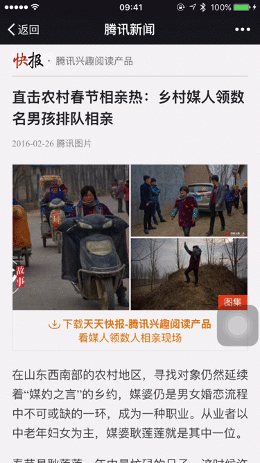
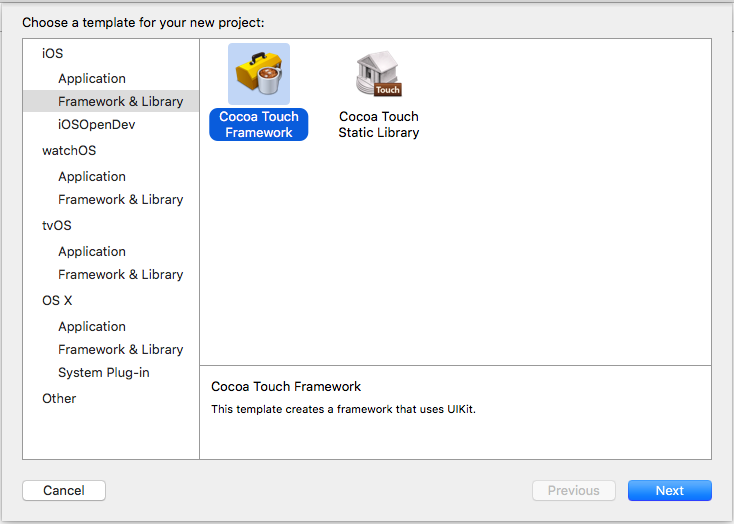
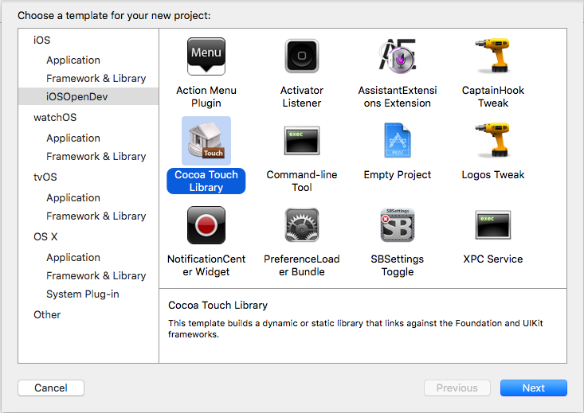
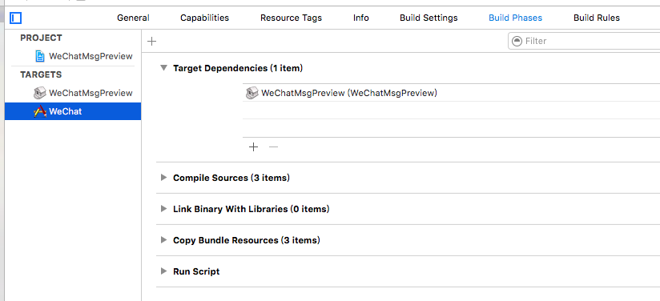
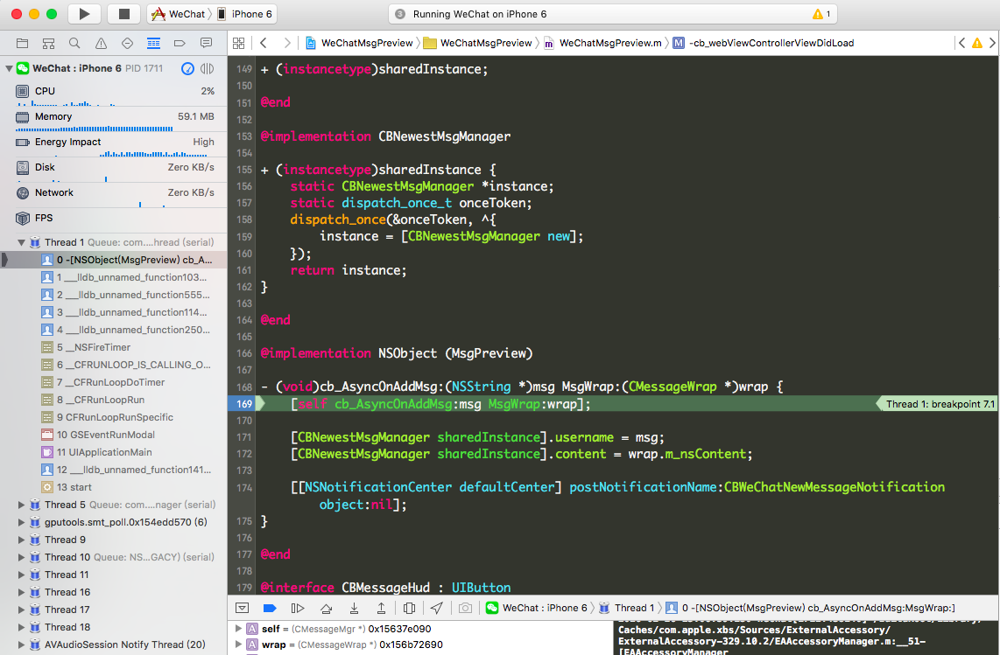

平时在微信使用时，经常出现这样的场景：阅读公众号文章时，突然一条好友消息来了。这时一直很纠结，我该停止阅读还是继续阅读。假如我可以预览消息的话，甚至回复消息后快速回来继续阅读。那太好不过了。
学习过iOS逆向开发的话，利用theos在越狱机器上实现还是可以的。但由于日常使用的是非越狱机器，鱼和熊掌都想要，只好在万能的google上寻找资料，终于找到了insert_dylib工具和念茜的博客上动态库注入相关知识。OK，开工！
效果图

需求分析
- 公众号文章界面（网页）：收到消息后，显示消息内容
- 公众号文章界面（网页）：点击消息内容进入对应聊天界面
- 聊天界面：点击网页标志，跳回公众号文章界面（网页）
代码分析
结合需求，需要hook的主要是微信消息通知Method，聊天界面ViewController，网页ViewController。利用工具class-dump, Hopper Disassembler很快定位出需要hook的微信代码，-[CMessageMgr AsyncOnAddMsg:MsgWrap:] -[BaseMsgContentViewController viewDidLoad] -[MMWebViewController viewDidLoad]
磨刀霍霍
定位出hook代码段，接下来要做的就是写代码了。
- Xcode现在支持建立动态库工程，但生成的是framework，可以通过修改工程文件下的project.pbxproj
productType = "com.apple.product-type.framework"; => productType = "com.apple.product-type.library.dynamic"
 - 利用iOSOpenDev也可以快速生成动态库工程。

这里注意要设置好签名证书，后续可能因为证书问题导致失败。
|
最后关键的一步~
|
好了，command＋B 成功生成动态库文件，下一步，利用insert_dylib修改微信可执行文件，重签名，生成新的微信app，安装到手机。嗯嗯，这样文章到这里就结束了～～
慢着，真正开发时哪会这么简单，代码一次成功。一旦代码出现问题，我们需要一直手动重复这样的工作：修改代码，生成dylib，修改微信可执行文件，重签名，生成新的app，安装到手机。
注意注意，博文的标题里有“调试”，调试！！！怎么做呢？
偷天换日
细心观察可以发现
- 任意一个app工程，run后在Derived Data文件夹都有对应的.app文件
- 在Build Phases中增加Run Script，可以在编译工程后执行自定义脚本。
于是，一招偷天换日招数就想出来了（通过脚本，在编译工程后，利用新生成的动态库生成WeChat.app, 替换原有目录下的app文件）
- 在原有工程中增加Application Target
- 在Build Phases中设置Target Dependencies，增加dylib，确保每次run app都会编译最新的dylib
 - 然后增加Run Script（修改微信可执行文件，重签名，生成新的app）
接下来的事情（安装app，打开手机app，lldb调试）就交给Xcode做了。
|

常见问题
|
原因：没拷贝libWeChatMsgPreview.dylib到WeChat.app目录下
|
原因：签名不对，需保持重签名时codesign -fs "iPhone Developer: *** (***)" --no-strict --entitlements=entitlements.plist Payload/WeChat.app/${LIBNAME}
codesign -fs "iPhone Developer: *** (***)" --no-strict --entitlements=entitlements.plist Payload/WeChat.app证书一致
脚本中涉及到的WeChat-dump-arm64.ipa需要从越狱机器中提取。对App Store App进行重签名–解密[上]
相关资料
insert_dylib
iOS安全攻防（十二）：iOS7的动态库注入